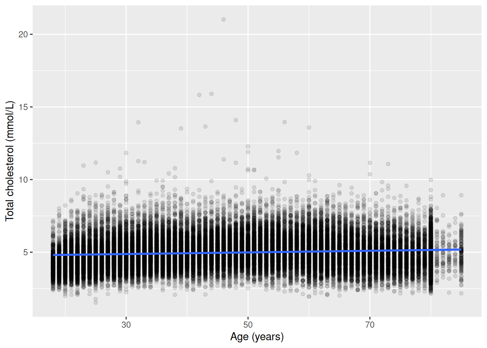
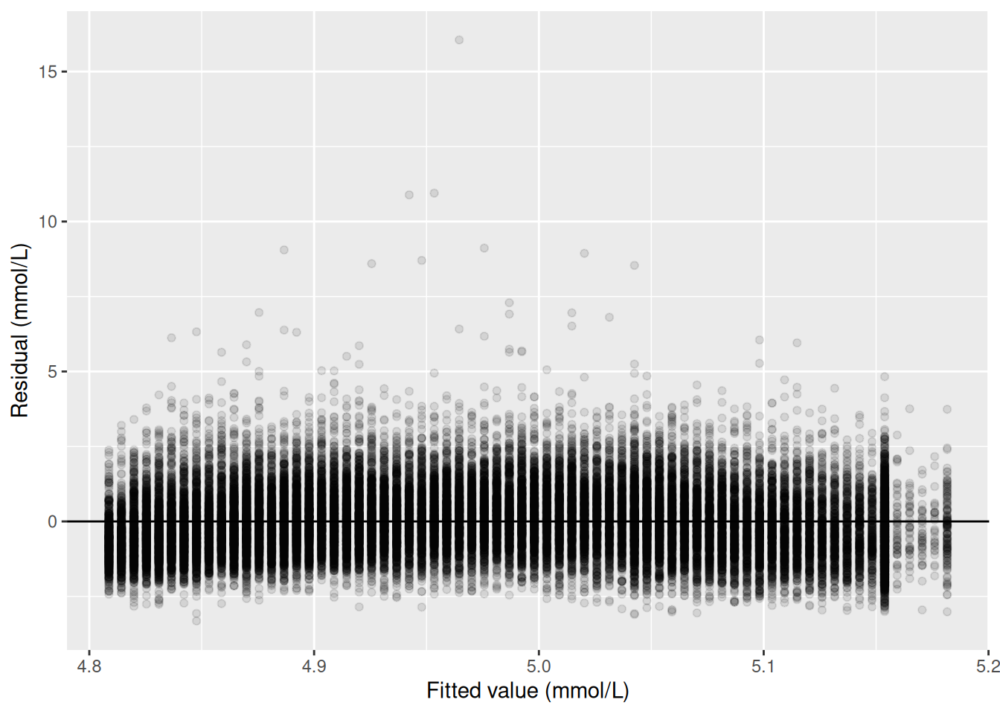
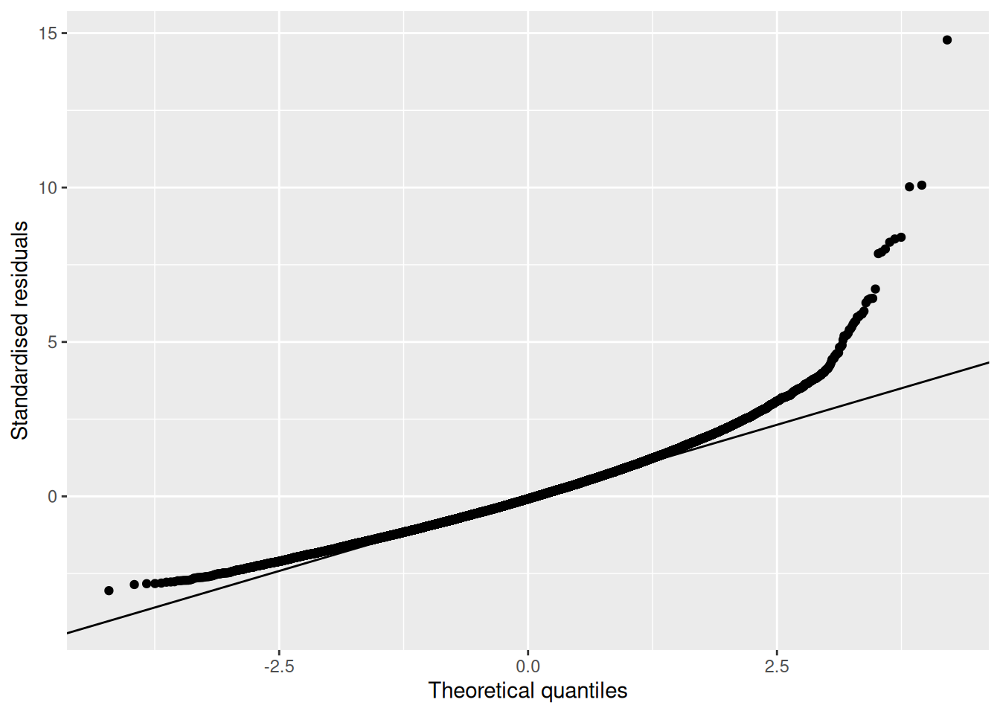
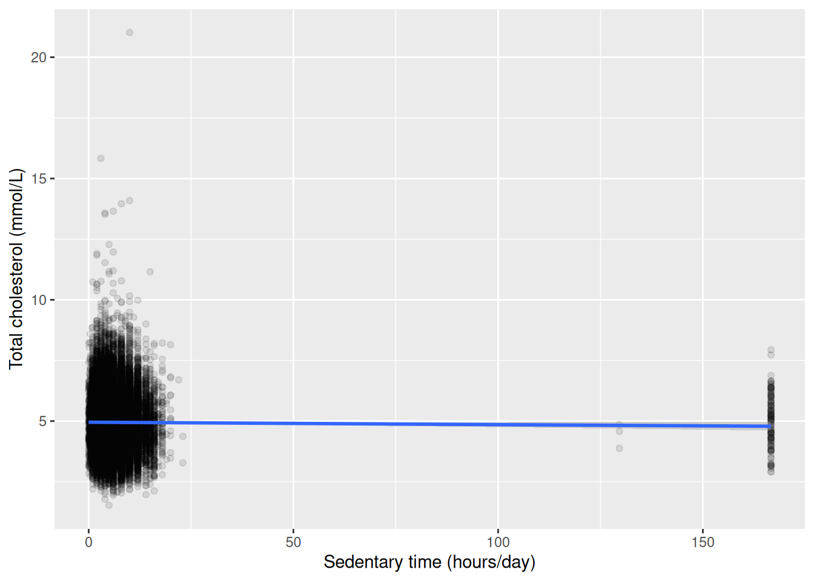
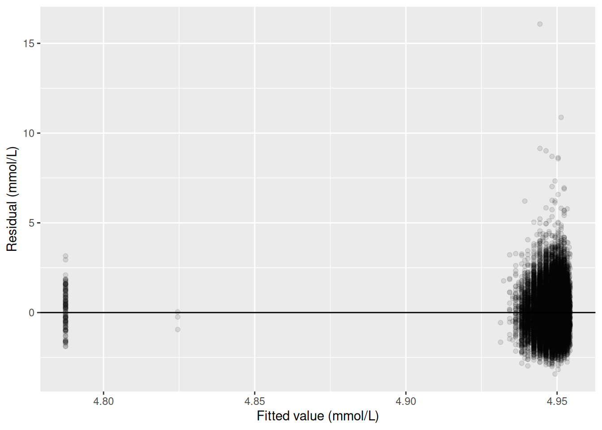
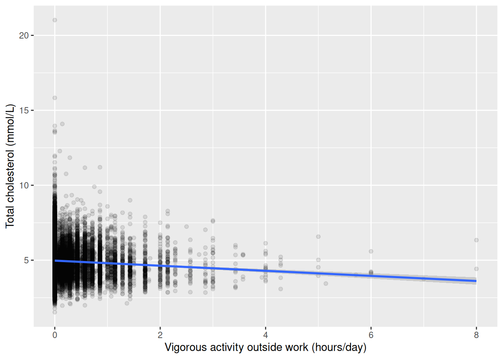
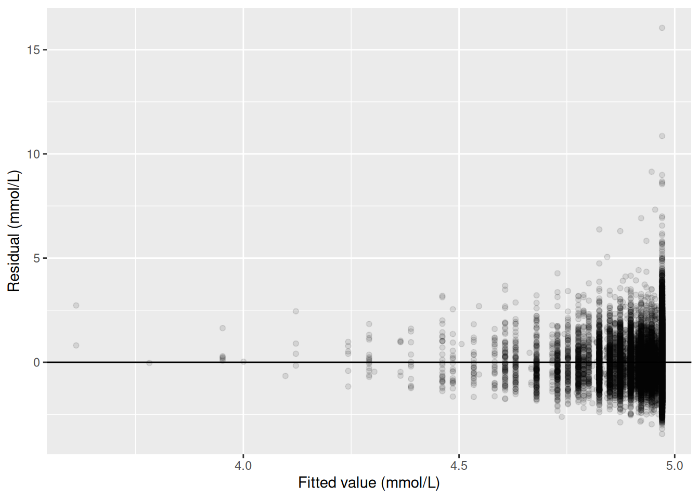

library(readr)
library(dplyr)
library(ggplot2)
library(here)
library(broom)
nhanes <- read_csv(here("data", "mph_nhanes_20241107.csv"))
dictionary <- read_csv(here("data", "mph_nhanes_20241107_dictionary.csv"))6 Correlation and simple linear regression (IES Week 10)
This practical follows the Week 10 seminar of the same name. That seminar opened with scatterplots and Pearson’s correlation coefficient, then made a deliberate shift: from describing how strongly two variables move together to modelling one variable as a function of the other. It stated the simple linear regression model, Y = α + βX + ε, introduced least squares and residuals, and showed how to interpret a slope, an intercept, and R². It also covered the assumptions behind the model, the diagnostic plots that check them, and the danger of using a fitted line to predict somewhere the data never reached. In this session we fit that model in R, check it properly, and use it to predict.
6.1 Chapter intended learning outcomes
By the end of this session you will be able to:
- Produce and interpret a scatterplot with a fitted regression line
- Fit a simple linear regression with
lm() - Generate and interpret standard diagnostic plots
- Generate predictions and identify when a prediction constitutes extrapolation
- Extract coefficients and confidence intervals, and report a simple regression result in journal format
6.2 Setup
As in Weeks 7 to 9, we read the data with read_csv() and turn the six coded variables into factors against the dictionary.
This chapter adds one new package, broom. It isn’t part of the tidyverse core, so if you haven’t used it in an earlier chapter, it likely isn’t installed yet. As Week 4 explained, installing a package and loading it are two different actions. If broom isn’t already on your machine, run install.packages("broom") once in the console, not inside this document. Once it’s installed, library(broom) below makes its functions available for this session, exactly like every other package we load. gtsummary isn’t used anywhere in this chapter, so it isn’t loaded here. dictionary is read in even though no code below refers to it, for the reason Week 8 gave: it’s there so it’s to hand the moment you’re unsure what a column means.
nhanes <- nhanes |>
mutate(
gender = factor(gender,
levels = c(1, 2),
labels = c("Male", "Female")),
eth = factor(eth,
levels = c(1, 2, 3, 4, 5),
labels = c("Mexican American", "Other Hispanic", "White", "Black", "Others")),
edu = factor(edu,
levels = c(1, 2, 3),
labels = c("Less than high school", "High school graduate", "Above high school")),
smoking = factor(smoking,
levels = c("Never", "Previous", "Current")),
phq.c = factor(phq.c,
levels = c("0 Normal", "1 Mild symptoms", "2 Possible depression"),
labels = c("Normal", "Mild symptoms", "Possible depression"),
ordered = TRUE),
blm.cvd = factor(blm.cvd,
levels = c(0, 1),
labels = c("No", "Yes"))
)This is the same recode we introduced in Week 7 and repeated in Weeks 8 and 9. See Week 7 for the reasoning behind each variable and each choice of ordered = TRUE. We repeat it here, unchanged, so this chapter stands on its own too.
6.3 Correlation: Pearson’s r and Spearman’s rho
The seminar opened with scatterplots and Pearson’s correlation coefficient, before shifting to regression. It’s worth computing both correlation coefficients here in R before we make that same shift.
cor(), from base R, calculates a correlation coefficient between two numeric variables. Its default method is Pearson’s r, which measures the strength of a straight-line relationship between two continuous variables. We’ll use the same pairing this chapter’s first model uses, age and chol, so the connection between correlation and regression stays visible rather than assumed:
cor(nhanes$age, nhanes$chol, use = "complete.obs")[1] 0.09398053The use = "complete.obs" argument tells cor() to drop any participant missing either age or chol before calculating the coefficient; without it, a single missing value in either variable makes the whole calculation return NA. cor.test() adds a confidence interval and a p-value testing whether the true correlation in the population is zero, and it drops incomplete pairs automatically, so it needs no use argument of its own:
cor.test(nhanes$age, nhanes$chol)
Pearson's product-moment correlation
data: nhanes$age and nhanes$chol
t = 18.684, df = 39174, p-value < 2.2e-16
alternative hypothesis: true correlation is not equal to 0
95 percent confidence interval:
0.08415645 0.10378634
sample estimates:
cor
0.09398053 Pearson’s r here is about 0.094 (95% CI 0.084 to 0.104, p < 0.001): a weak but clearly non-zero positive correlation between age and cholesterol. Hold onto that t-value, 18.68 on 39,174 degrees of freedom: the next section fits chol ~ age with lm(), and its slope’s t-value comes out identical. That’s not a coincidence. With one continuous predictor and one continuous outcome, testing whether r differs from zero and testing whether the regression slope differs from zero are the same test, read on two different scales. r is unitless and treats both variables symmetrically, correlating age with chol gives the same number as correlating chol with age, while a regression slope is in the outcome’s own units and only makes sense read in one direction. That’s exactly the shift the seminar made, from describing how strongly two variables move together to modelling one as a function of the other.
Pearson’s r assumes both variables sit on a scale where equal-sized steps mean the same thing throughout its range, an interval or ratio scale. phq.c, the depression symptom category, doesn’t: “Possible depression” isn’t a fixed distance from “Mild symptoms” the way one extra year of age is from another, it’s an ordered category, not a measurement. Spearman’s rank correlation is the alternative for exactly this situation. Instead of correlating the raw values, it correlates their ranks, which only needs putting observations in order, not measuring a distance between them. phq.c is already an ordered factor, so as.numeric(), from base R, which converts whatever it’s given into plain numbers, turns it into the numbers 1, 2, and 3 in the order the factor was built. That’s exactly the ranking Spearman’s correlation needs:
phq_numeric <- as.numeric(nhanes$phq.c)
cor.test(nhanes$age, phq_numeric, method = "spearman")Warning in cor.test.default(nhanes$age, phq_numeric, method = "spearman"):
cannot compute exact p-value with ties
Spearman's rank correlation rho
data: nhanes$age and phq_numeric
S = 8.5857e+12, p-value = 0.3725
alternative hypothesis: true rho is not equal to 0
sample estimates:
rho
0.004619514 Spearman’s rho here is about 0.005, p = 0.37: close enough to zero, and far from significant, that age and depression symptom category show no clear monotonic relationship in this sample. The warning printed above, “cannot compute exact p-value with ties,” is a computational detail rather than a problem: with tens of thousands of participants spread across only three phq.c categories, many participants necessarily share the same rank, so R falls back on an approximate p-value instead of an exact one. The approximate value is still valid here.
Correlation is as far as this chapter takes phq.c. The rest of the chapter follows the seminar’s own shift, from measuring association to modelling it directly with regression.
6.4 A scatterplot with a fitted line: cholesterol by age
Week 7 plotted total cholesterol (chol, in mmol/L) against age (in years) as a plain scatterplot, with no line through it. geom_smooth(), from ggplot2, adds one. With method = "lm", it fits exactly the simple linear regression this chapter is about, and draws the result:
ggplot(nhanes |> filter(!is.na(age), !is.na(chol)), aes(x = age, y = chol)) +
geom_point(alpha = 0.1) +
geom_smooth(method = "lm") +
labs(x = "Age (years)", y = "Total cholesterol (mmol/L)")`geom_smooth()` using formula = 'y ~ x'
Above the plot, ggplot2 printed `geom_smooth()` using formula = 'y ~ x'. That’s a message rather than a warning, and nothing has gone wrong: it’s simply reporting which formula it fitted, because geom_smooth() picks one for you if you don’t say. Here it chose a straight line in x, which is exactly the simple linear regression we asked for with method = "lm". It’s worth a glance the first time, because on a plot where you meant to fit something more elaborate it would tell you that you hadn’t. It appears above every geom_smooth() plot in this chapter and always says the same thing.
The shaded band around the line is a 95% confidence interval for the line itself, the same idea as every other confidence interval in this course, just drawn as a band rather than printed as two numbers. The line slopes gently upward: cholesterol tends to be a little higher in older participants. The cloud of points around it is wide, though. Age clearly doesn’t determine cholesterol on its own, and the next section puts a number on exactly how much of the picture the line accounts for.
NoteTry it yourself: what the band shows
Re-run the plot above with geom_smooth(method = "lm", se = FALSE). Then try geom_smooth(method = "lm", level = 0.80). Write one sentence on what disappeared in the first change, and one sentence on what changed in the second.
6.5 Fitting the model with lm()
lm(), from base R, fits a linear model. Its first argument is a formula, in the same y ~ x form t.test() used in Week 9: the variable on the left is what we’re modelling, and the variable on the right is what we’re modelling it with. We drop the rows where either variable is missing first, the same habit we’ve used for every model and test so far:
age_complete <- nhanes |> filter(!is.na(age), !is.na(chol))
m_age <- lm(chol ~ age, data = age_complete)
summary(m_age)
Call:
lm(formula = chol ~ age, data = age_complete)
Residuals:
Min 1Q Median 3Q Max
-3.3177 -0.7469 -0.0877 0.6401 16.0554
Coefficients:
Estimate Std. Error t value Pr(>|t|)
(Intercept) 4.7085437 0.0151970 309.83 <2e-16 ***
age 0.0055658 0.0002979 18.68 <2e-16 ***
---
Signif. codes: 0 '***' 0.001 '**' 0.01 '*' 0.05 '.' 0.1 ' ' 1
Residual standard error: 1.086 on 39174 degrees of freedom
Multiple R-squared: 0.008832, Adjusted R-squared: 0.008807
F-statistic: 349.1 on 1 and 39174 DF, p-value: < 2.2e-16As with t.test() in Week 8, there’s no $ anywhere in that call. lm()’s data = argument tells it to look for chol and age inside age_complete, so it finds them there directly rather than us pulling either one out by hand first. Every model in this course, lm() and glm() alike, follows this same pattern: name the variables bare in the formula, and point data = at wherever they live.
summary() prints a lot at once. The Coefficients table has the two numbers that define the fitted line: the (Intercept), the model’s predicted cholesterol at age zero, and the slope on age, the predicted change in cholesterol for each additional year of age. Each has a standard error, a t-value, and a p-value attached, exactly the reporting standard from Week 9. The slope here is small but clearly non-zero: cholesterol tends to be about 0.0056 mmol/L higher for every extra year of age, and the p-value is far below 0.001.
Multiple R-squared, R², says what fraction of the variation in cholesterol this model accounts for. Here it’s under 0.01: age explains under 1% of the variation in cholesterol between participants. That isn’t a contradiction of the significant slope above. A relationship can be real, precisely estimated, and still leave most of the variation in the outcome unexplained. R² and a p-value answer different questions, and neither one substitutes for the other.
coef() and confint(), both base R, pull out just the coefficients and just their confidence intervals, without the rest of the printout:
coef(m_age)(Intercept) age
4.708543749 0.005565764 confint(m_age) 2.5 % 97.5 %
(Intercept) 4.678757321 4.738330177
age 0.004981885 0.006149643broom::tidy() puts the same information into a tidy data frame, one row per coefficient, which is easier to work with in code than summary()’s printed output. Adding conf.int = TRUE includes the confidence interval as two extra columns:
tidy(m_age, conf.int = TRUE)# A tibble: 2 × 7
term estimate std.error statistic p.value conf.low conf.high
<chr> <dbl> <dbl> <dbl> <dbl> <dbl> <dbl>
1 (Intercept) 4.71 0.0152 310. 0 4.68 4.74
2 age 0.00557 0.000298 18.7 1.46e-77 0.00498 0.00615Written as it would appear in a results section: total cholesterol was on average 0.0056 mmol/L higher for each additional year of age (95% CI: 0.0050 to 0.0061 mmol/L, p < 0.001), although age accounted for less than 1% of the variation in cholesterol between participants.
6.6 Checking assumptions: diagnostic plots
A fitted line is only trustworthy if the model’s assumptions hold: linearity (a straight line is the right shape), constant variance (the scatter around the line doesn’t change as you move along it), and normally distributed residuals (the vertical distances between the points and the line). A fourth assumption, independence between observations, isn’t something a plot from one fitted model can check. It’s a property of how the data were collected, and NHANES’s sampling design is what would need inspecting for that, not this model’s output.
broom::augment() adds each observation’s fitted value and residual back onto the original data, in columns named .fitted and .resid:
age_aug <- augment(m_age)
age_aug# A tibble: 39,176 × 8
chol age .fitted .resid .hat .sigma .cooksd .std.resid
<dbl> <dbl> <dbl> <dbl> <dbl> <dbl> <dbl> <dbl>
1 4.03 37 4.91 -0.884 0.0000339 1.09 0.0000112 -0.814
2 3.75 23 4.84 -1.09 0.0000709 1.09 0.0000355 -1.00
3 5.04 38 4.92 0.120 0.0000324 1.09 0.000000198 0.110
4 5.56 37 4.91 0.646 0.0000339 1.09 0.00000599 0.594
5 5.66 27 4.86 0.801 0.0000573 1.09 0.0000156 0.738
6 8.9 30 4.88 4.02 0.0000487 1.09 0.000335 3.70
7 3.57 30 4.88 -1.31 0.0000487 1.09 0.0000352 -1.20
8 6.57 30 4.88 1.69 0.0000487 1.09 0.0000593 1.56
9 6.67 22 4.83 1.84 0.0000747 1.09 0.000107 1.69
10 5.9 29 4.87 1.03 0.0000515 1.09 0.0000231 0.948
# ℹ 39,166 more rowsPlotting residuals against fitted values checks linearity and constant variance together. If the model is a good fit, the points should scatter evenly above and below zero, with no obvious curve and no obvious change in spread from left to right. geom_hline(), from ggplot2, draws a single horizontal line across the plot at whatever height yintercept names, and we put one at zero to make “above and below” easy to judge by eye:
ggplot(age_aug, aes(x = .fitted, y = .resid)) +
geom_point(alpha = 0.1) +
geom_hline(yintercept = 0) +
labs(x = "Fitted value (mmol/L)", y = "Residual (mmol/L)")
Most points sit in a fairly even band around zero, consistent with linearity and roughly constant variance. A small number of participants with very high cholesterol readings sit well above the line, though, visible here as points a long way above zero. Those same participants are worth keeping in mind for the QQ plot, which checks whether the residuals are approximately normally distributed. .std.resid, also added by augment(), standardises each residual to the same scale a normal distribution would use. stat_qq() and stat_qq_line(), both from ggplot2, plot the standardised residuals against what a perfect normal distribution would produce, with a reference line for comparison:
ggplot(age_aug, aes(sample = .std.resid)) +
stat_qq() +
stat_qq_line() +
labs(x = "Theoretical quantiles", y = "Standardised residuals")
Points that fall on the line are consistent with normally distributed residuals. Here, the middle of the distribution sits close to the line, but the upper tail pulls away from it. That’s the same small group of participants with unusually high cholesterol showing up again: the residuals are a little more heavy-tailed than a normal distribution would predict. With a sample this large, the model’s estimates are still reliable despite this. With a much smaller sample, tail behaviour like this would be more of a concern.
6.7 Predicting from the model, and the danger of extrapolation
predict(), from base R, uses a fitted model to generate a predicted value for a new set of inputs. Those inputs need to arrive as a data frame, with a column named to match each predictor in the model. data.frame(), also from base R, builds one directly from the values we supply, rather than reading one in from a file:
predict(m_age, newdata = data.frame(age = c(45, 150)), interval = "confidence") fit lwr upr
1 4.959003 4.948142 4.969865
2 5.543408 5.482643 5.604174interval = "confidence" adds a confidence interval around each prediction. The first row, age 45, sits comfortably inside the range of ages actually observed in this sample (18 to 85), so this prediction is supported by data the model was fitted on. The second row, age 150, is not. Nobody in this dataset, or in any verified human population, is 150 years old. The model has no information about what happens at that age, and fitting a straight line through the data we do have says nothing reliable about what lies far outside it. The predicted value it returns looks like an ordinary number, which is exactly what makes extrapolation dangerous: a plausible-looking output doesn’t mean the input that produced it was reasonable. Always check a prediction’s input against the range the model was actually fitted on before trusting its output.
6.8 Worked example: cholesterol by sedentary time
Let’s bring the whole workflow together on the pairing this course actually needs: total cholesterol (chol) modelled by sedentary time (sed, in hours/day).
ggplot(nhanes |> filter(!is.na(sed), !is.na(chol)), aes(x = sed, y = chol)) +
geom_point(alpha = 0.1) +
geom_smooth(method = "lm") +
labs(x = "Sedentary time (hours/day)", y = "Total cholesterol (mmol/L)")`geom_smooth()` using formula = 'y ~ x'
The fitted line is nearly flat, and the confidence band around it is wide enough to include a line with no slope at all. Fitting the model directly confirms what the plot suggests:
sed_complete <- nhanes |> filter(!is.na(sed), !is.na(chol))
m_sed <- lm(chol ~ sed, data = sed_complete)
summary(m_sed)
Call:
lm(formula = chol ~ sed, data = sed_complete)
Residuals:
Min 1Q Median 3Q Max
-3.4193 -0.7563 -0.0893 0.6467 16.0757
Coefficients:
Estimate Std. Error t value Pr(>|t|)
(Intercept) 4.9543425 0.0070430 703.445 <2e-16 ***
sed -0.0010015 0.0005582 -1.794 0.0728 .
---
Signif. codes: 0 '***' 0.001 '**' 0.01 '*' 0.05 '.' 0.1 ' ' 1
Residual standard error: 1.083 on 32307 degrees of freedom
Multiple R-squared: 9.961e-05, Adjusted R-squared: 6.866e-05
F-statistic: 3.218 on 1 and 32307 DF, p-value: 0.07282confint(m_sed) 2.5 % 97.5 %
(Intercept) 4.940538020 4.968147e+00
sed -0.002095651 9.269529e-05The slope is small and negative, about -0.0010 mmol/L for each additional hour/day of sedentary time, and the p-value is 0.073: above the conventional 0.05 threshold. The 95% confidence interval for the slope, -0.0021 to 0.0001 mmol/L, includes zero. R² is essentially zero. On this evidence alone, sedentary time and cholesterol show no clear linear relationship in this sample.
The diagnostic plots are worth checking anyway, since a weak result is not the same as a well-behaved one:
sed_aug <- augment(m_sed)
ggplot(sed_aug, aes(x = .fitted, y = .resid)) +
geom_point(alpha = 0.1) +
geom_hline(yintercept = 0) +
labs(x = "Fitted value (mmol/L)", y = "Residual (mmol/L)")
ggplot(sed_aug, aes(sample = .std.resid)) +
stat_qq() +
stat_qq_line() +
labs(x = "Theoretical quantiles", y = "Standardised residuals")The same pattern from the age model shows up again, more visibly: a handful of participants sit far from the fitted line, and sed itself carries a long right tail, including some participants recording well over 24 hours of sedentary time a day, which cannot be literally true and points to some noise in how this variable was recorded or reported. None of this overturns the conclusion above. It’s a reason to hold the result loosely rather than to distrust the direction of the estimate.
Written as it would appear in a results section: sedentary time was not associated with total cholesterol in this sample (slope -0.0010 mmol/L per hour/day, 95% CI: -0.0021 to 0.0001 mmol/L, p = 0.073). This is a genuinely unsatisfying result to end a chapter on, and that’s deliberate. This model has exactly one predictor. It says nothing about age, nothing about gender, and nothing about anything else that might differ between people with more and less sedentary time. Week 11 puts those back in.
6.9 Exercises
Exercise 1 (ILOs 1, 2, 5). Using vpa_r, vigorous physical activity outside work (hours/day), produce a scatterplot of chol against vpa_r with a fitted regression line. Fit the model with lm(), and extract its coefficients and their 95% confidence intervals with confint() and broom::tidy(). Write one sentence reporting the slope as it would appear in a results section.
Exercise 2 (ILO 3). For the model fitted in Exercise 1, produce a residuals-vs-fitted plot and a QQ plot. Write one sentence describing what each plot shows, and one sentence commenting on anything the plots reveal about the shape of vpa_r itself.
Exercise 3 (ILO 4). Using the model fitted in Exercise 1, predict total cholesterol at vpa_r = 1 hour/day and at vpa_r = 24 hours/day. Write one sentence stating which of the two predictions can be trusted, and one sentence explaining why the other cannot, referring to the range of vpa_r actually observed in the data.
6.10 Writing exercise
Using the chol ~ sed result from the worked example, write a short results paragraph of two to three sentences, as it would appear in a report. State the estimated slope, its 95% confidence interval, and its p-value, and say plainly what this evidence does and does not support. Avoid two common mistakes: don’t describe a non-significant result as proof there is no relationship at all, and don’t write around the p-value without stating it.
NoteSolutions
Exercise 1
vpa_r_complete <- nhanes |> filter(!is.na(vpa_r), !is.na(chol))
ggplot(vpa_r_complete, aes(x = vpa_r, y = chol)) +
geom_point(alpha = 0.1) +
geom_smooth(method = "lm") +
labs(x = "Vigorous activity outside work (hours/day)", y = "Total cholesterol (mmol/L)")`geom_smooth()` using formula = 'y ~ x'
m_vpa_r <- lm(chol ~ vpa_r, data = vpa_r_complete)
summary(m_vpa_r)
Call:
lm(formula = chol ~ vpa_r, data = vpa_r_complete)
Residuals:
Min 1Q Median 3Q Max
-3.4408 -0.7508 -0.0808 0.6392 16.0492
Coefficients:
Estimate Std. Error t value Pr(>|t|)
(Intercept) 4.970791 0.006375 779.74 <2e-16 ***
vpa_r -0.169796 0.015756 -10.78 <2e-16 ***
---
Signif. codes: 0 '***' 0.001 '**' 0.01 '*' 0.05 '.' 0.1 ' ' 1
Residual standard error: 1.08 on 32329 degrees of freedom
Multiple R-squared: 0.003579, Adjusted R-squared: 0.003549
F-statistic: 116.1 on 1 and 32329 DF, p-value: < 2.2e-16confint(m_vpa_r) 2.5 % 97.5 %
(Intercept) 4.9582959 4.9832860
vpa_r -0.2006789 -0.1389139tidy(m_vpa_r, conf.int = TRUE)# A tibble: 2 × 7
term estimate std.error statistic p.value conf.low conf.high
<chr> <dbl> <dbl> <dbl> <dbl> <dbl> <dbl>
1 (Intercept) 4.97 0.00637 780. 0 4.96 4.98
2 vpa_r -0.170 0.0158 -10.8 4.94e-27 -0.201 -0.139Total cholesterol was about 0.170 mmol/L lower for each additional hour/day of vigorous activity outside work (95% CI: -0.201 to -0.139 mmol/L, p < 0.001).
Exercise 2
vpa_r_aug <- augment(m_vpa_r)
ggplot(vpa_r_aug, aes(x = .fitted, y = .resid)) +
geom_point(alpha = 0.1) +
geom_hline(yintercept = 0) +
labs(x = "Fitted value (mmol/L)", y = "Residual (mmol/L)")
ggplot(vpa_r_aug, aes(sample = .std.resid)) +
stat_qq() +
stat_qq_line() +
labs(x = "Theoretical quantiles", y = "Standardised residuals")The residuals-vs-fitted plot checks linearity and constant variance; the QQ plot checks whether the residuals are approximately normally distributed. Most points in the residual plot fall into a small number of vertical strips rather than scattering freely, because vpa_r itself only takes a small number of distinct values: most participants report exactly zero hours/day of vigorous activity outside work, so their fitted value and residual pattern is shared rather than spread out. This is a feature of the predictor’s own distribution, not a sign that the model is wrongly specified.
Exercise 3
predict(m_vpa_r, newdata = data.frame(vpa_r = c(1, 24)), interval = "confidence") fit lwr upr
1 4.8009945 4.7718047 4.830184
2 0.8956766 0.1585768 1.632776The prediction at vpa_r = 1 hour/day (about 4.80 mmol/L) can be trusted, because an hour of vigorous activity outside work a day is well within the range observed in this sample (0 to 8 hours/day). The prediction at vpa_r = 24 hours/day (about 0.90 mmol/L) cannot: 24 hours/day of vigorous activity is not physically possible to sustain, it is far outside the observed range, and the resulting prediction, a cholesterol level barely above zero, is not a value any living person could have. It is a consequence of extending the fitted line somewhere the data give it no support, not a real finding.
Writing exercise (sample answer)
Sedentary time was not significantly associated with total cholesterol in this sample (slope -0.0010 mmol/L per hour/day, 95% CI: -0.0021 to 0.0001 mmol/L, p = 0.073). The confidence interval includes zero, so these data are consistent with no true association, but they do not rule one out either; a genuinely small effect could still be present and undetected at this sample size. This model adjusts for nothing else, so it cannot say whether age, gender, or other characteristics are masking or accounting for this result.